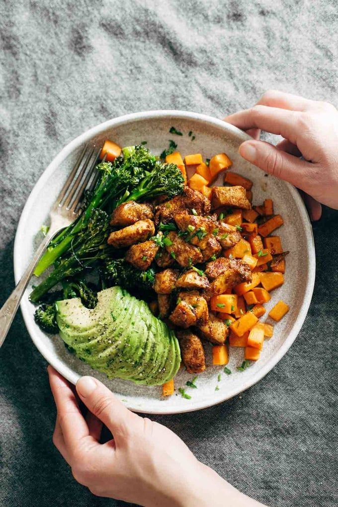

Spicy Chicken and Sweet Potatoes

Spicy Chicken and Sweet Potato Meal Prep Magic! Just chicken, sweet potatoes, broccoli, avocado, and seasonings. 3 big sheet pans + 45 minutes = healthy meals for a week!
Ingredients
- 2 lbs. boneless skinless chicken breasts
- 3 tablespoons spicy seasoning mix
- a few tablespoons of olive oil
- 3 sweet potatoes
- 5-6 cups of broccoli florets
- coarse sea salt and freshly cracked pepper
- avocado/hummus/lemon juice/chives/olive oil for serving
Steps
- Preheat the oven to 425 degrees. Toss the chicken pieces with the spices and a quick stream of olive oil. Stir to combine; store in the fridge for about 30 minutes while you prep other ingredients.
- Arrange the vegetables on their own sheet pans (preferably ones with edges to catch drips, etc.). Drizzle with olive oil and sprinkle generously with salt. Arrange the chicken on a separate sheet pan.
- Bake all ingredients for 12-15 minutes. Remove the broccoli and chicken. Stir sweet potatoes and roast another 15 minutes or so.
- Done! Divide your servings out into containers and be happy you have meal starters ready for the week!